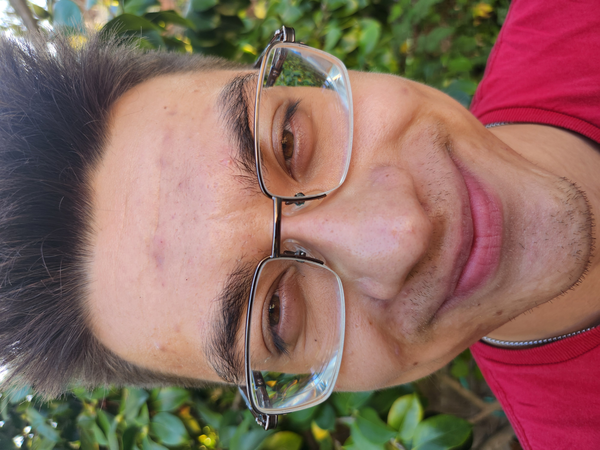
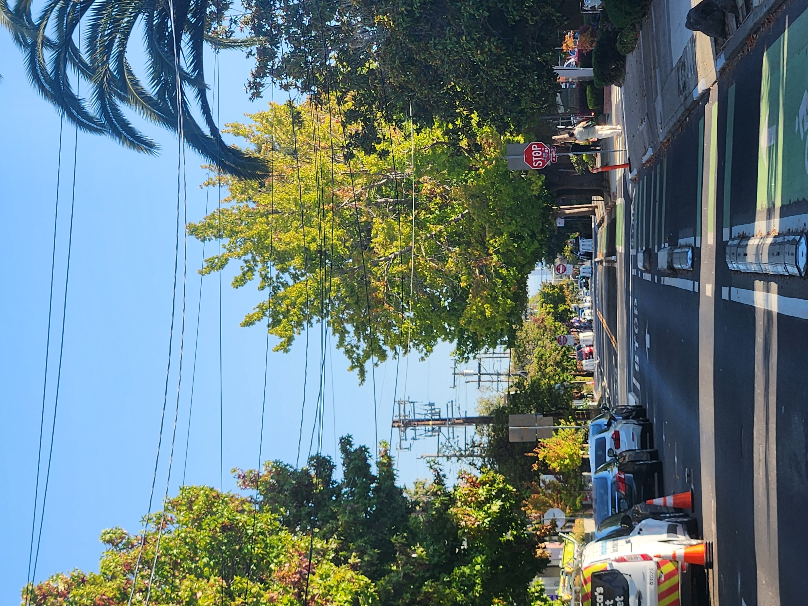
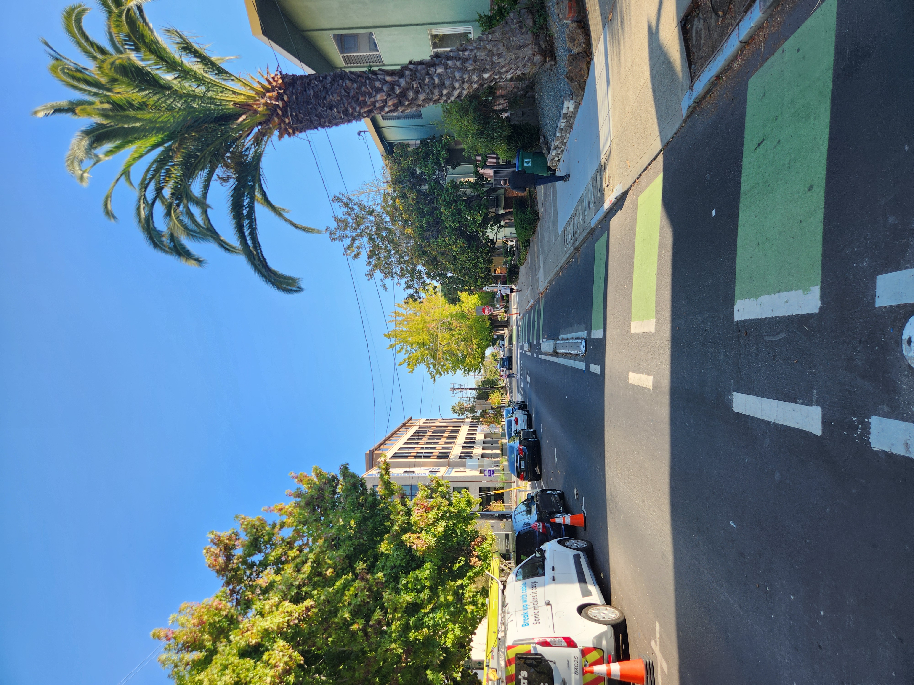

Part 1: Selfie Comparison
Close vs. stepped-back selfies, showing distortion from perspective.

Part 2: Street Perspective
Wide vs. zoomed-in street view, illustrating perspective compression.


Part 3: Dolly Zoom
The classic "Vertigo shot" effect, created by moving back while zooming in.